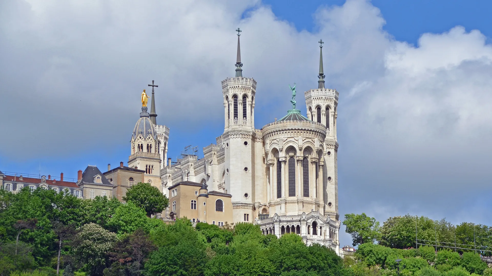

{kind=link}

Annecy 구시가지
알프스 만년설이 흘러드는 유럽에서 가장 투명한 안시 호수와 티우(Thiou) 운하를 품은 '알프스의 베네치아'. 12세기 수상 요새 팔레 드 릴(Palais de l'Île), 중세 안시 성채, 사랑의 다리(Pont des Amours).

기원전 43년 로마 총독 무나티우스 플랑쿠스가 로마 3대 갈리아 속주의 수도 '루그두눔(Lugdunum)'을 건설했던 리옹 도시 역사의 출발점이자 '기도하는 언덕(La colline qui prie)'이다.
해발 290m 언덕 정상에는 1870년 보불전쟁 당시 침략을 막아준 성모 마리아에 감사하며 시민들의 헌금으로 축조된 노트르담 드 푸르비에르 대성당(Basilique Notre-Dame de Fourvière)이 웅장한 흰색 대리석 요새처럼 솟아 있다.
성당 바로 옆 야외 에스플러네이드 테라스에 서면 발아래 비외리옹과 손(Saône) 강, 두 강 사이의 반도 프레스킬(Presqu'île), 론(Rhône) 강 너머 현대 신도심과 맑은 날 멀리 알프스 몽블랑(Mont Blanc)까지 이어지는 리옹 최고의 3단 입체 파노라마가 한눈에 펼쳐진다.
"리옹에 도착해 가장 먼저 올라가 도시 전체의 지리적 뼈대(두 강과 반도, 두 개의 언덕)를 눈으로 확인하고, 2,000년 로마 유적에서 르네상스 구시가지를 거쳐 강변으로 걸어 내려오는 완벽한 역사적 하산 코스의 시작점이다." 푸니쿨라를 타고 올라가 바실리카 내부의 찬란한 황금 모자이크를 감상하고, 로마 대극장 유적을 거쳐 로제르 정원(Jardin du Rosaire) 숲길을 따라 비외리옹으로 걸어 내려오는 90~120분 코스가 가장 이상적이다.
| 운영시간 | 바실리카 7:00~20:00(일요일 21:00), 크립트 8:30~18:30, 정원 6:30~22:30. Lugdunum 박물관 화~금 11:00~18:00, 토·일 10:00~18:00. 로마극장 5/2~9/30 7:00~21:00 |
|---|---|
| 휴무 | 바실리카·로마극장·전망대 연중무휴 |
| 요금 | 무료 |
| 예약 | 바실리카 개인 방문 무료·예약 불필요, 가이드 투어(지붕·보물관)만 reservation.fourviere.org 예약. Lugdunum 개인 방문 예약 불필요 |
| 메모 | Lugdunum 박물관은 월요일 휴관이라 9/21(월)에는 못 들어간다. 보려면 9/22(화)·9/23(수) 오후 — 선택 항목이고 새로 배정하지 않는다. |
| 항목 | 상세 정보 |
|---|---|
| 위치 | 8 Place de Fourvière, 69005 Lyon |
| 운영 시간 | 바실리카 성당 매일 07:00–20:00 / 야외 에스플러네이드 전망대 07:00–21:30 |
| 입장료 | 바실리카 성당, 전망대, 로마 대극장 야외 유적 전수 무료 (박물관 실내 별도 유료) |
| 교통 접근 (추천) | 메트로 D호선 Vieux Lyon역에서 푸니쿨라 F2호선(Funiculaire Fourvière) 탑승 후 정상 직결 (TCL 대중교통 1회권 €2.00 사용 가능) |
| 추천 하산 동선 | 정상을 둘러본 후 푸니쿨라를 다시 타지 말고, 로마 대극장을 거쳐 Jardin du Rosaire 숲길(도보 20분)을 따라 비외리옹으로 걸어 내려오는 코스 강력 권장 |
알프스 만년설이 흘러드는 유럽에서 가장 투명한 안시 호수와 티우(Thiou) 운하를 품은 '알프스의 베네치아'. 12세기 수상 요새 팔레 드 릴(Palais de l'Île), 중세 안시 성채, 사랑의 다리(Pont des Amours).

유럽 최대 규모의 순수 보행자 붉은 자갈 광장(6.2ha)이자 리옹 지리망의 원점(Point Zéro). 중앙의 루이 14세 기마상과 푸르비에르 언덕 조망, 남서쪽 생텍쥐페리와 어린 왕자 기념 동상.

19세기 리옹 비단 산업의 심장이자 '일하는 언덕'. 4m 높이 자카르(Jacquard) 직조기를 위해 설계된 층고 높은 카뉘 아파트, 1831년 노동자 봉기의 상징 6층 거대 계단 '쿠르 데 보라스(Cour des Voraces)', 크루아루스 대로 로컬 시장.

프랑스 요리의 교황 폴 보퀴즈의 이름을 딴 세계 최고의 실내 미식 시장. 프랑스 최고 장인(MOF)들의 50여 개 최고급 식료품점, 메르 리샤르 생마르슬랭 치즈, 시빌리아 샤퀴테리, 현장 굴·해산물 바.

1857년 조성된 117ha 면적의 프랑스 최대 도심 생태 공원. 16ha 인공 호수, 19세기 거대한 철골 유리 온실 식물원, 무료 야외 동물원과 국제 장미원(Roseraie).

15~16세기 번영했던 유럽 최대 규모의 르네상스 건축 지구이자 유네스코 세계유산. 건물과 안뜰을 관통해 미로처럼 이어진 리옹 고유의 비밀 통로 '트라불(Traboules)'과 생장 대성당.